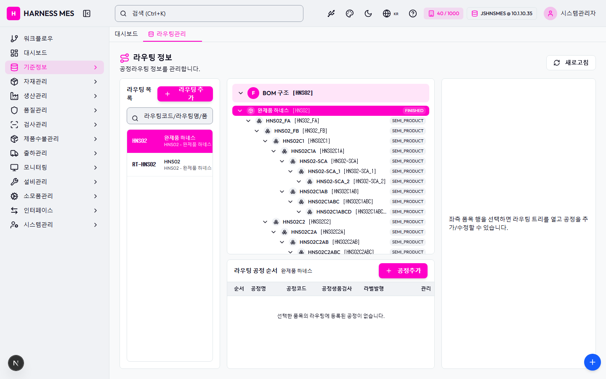

Route: /master/routing
Status: PASS / HTTP 200
| 기능/버튼 | 처리 방식 | 상태 | 비고 |
|---|---|---|---|
| 화면 로드 | GET /master/routing | 실행 | HTTP 200 |
| 초기 API 호출 | 브라우저 네트워크 수집 | 실행 | 18건 |
| 🇰🇷 | 화면 버튼 목록화 | 목록화 | 후속 메뉴별 세부 시나리오 실행 대상 |
| 시스템관리자 | 화면 버튼 목록화 | 목록화 | 후속 메뉴별 세부 시나리오 실행 대상 |
| 워크플로우 | 화면 버튼 목록화 | 목록화 | 후속 메뉴별 세부 시나리오 실행 대상 |
| 대시보드 | 화면 버튼 목록화 | 목록화 | 후속 메뉴별 세부 시나리오 실행 대상 |
| 기준정보 | 화면 버튼 목록화 | 목록화 | 후속 메뉴별 세부 시나리오 실행 대상 |
| 자재관리 | 화면 버튼 목록화 | 목록화 | 후속 메뉴별 세부 시나리오 실행 대상 |
| 생산관리 | 화면 버튼 목록화 | 목록화 | 후속 메뉴별 세부 시나리오 실행 대상 |
| 품질관리 | 화면 버튼 목록화 | 목록화 | 후속 메뉴별 세부 시나리오 실행 대상 |
| 검사관리 | 화면 버튼 목록화 | 목록화 | 후속 메뉴별 세부 시나리오 실행 대상 |
| 제품수불관리 | 화면 버튼 목록화 | 목록화 | 후속 메뉴별 세부 시나리오 실행 대상 |
| 출하관리 | 화면 버튼 목록화 | 목록화 | 후속 메뉴별 세부 시나리오 실행 대상 |
| 모니터링 | 화면 버튼 목록화 | 목록화 | 후속 메뉴별 세부 시나리오 실행 대상 |
| 설비관리 | 화면 버튼 목록화 | 목록화 | 후속 메뉴별 세부 시나리오 실행 대상 |
| 소모품관리 | 화면 버튼 목록화 | 목록화 | 후속 메뉴별 세부 시나리오 실행 대상 |
| 인터페이스 | 화면 버튼 목록화 | 목록화 | 후속 메뉴별 세부 시나리오 실행 대상 |
| 시스템관리 | 화면 버튼 목록화 | 목록화 | 후속 메뉴별 세부 시나리오 실행 대상 |
| 라우팅관리 | 화면 버튼 목록화 | 목록화 | 후속 메뉴별 세부 시나리오 실행 대상 |
| 새로고침 | 화면 버튼 목록화 | 목록화 | 후속 메뉴별 세부 시나리오 실행 대상 |
| 라우팅 추가 | 화면 버튼 목록화 | 목록화 | 후속 메뉴별 세부 시나리오 실행 대상 |
| 완제품 하네스[HNS02] FINISHED | 화면 버튼 목록화 | 목록화 | 후속 메뉴별 세부 시나리오 실행 대상 |
| HNS02_FA[HNS02_FA] SEMI_PRODUCT | 화면 버튼 목록화 | 목록화 | 후속 메뉴별 세부 시나리오 실행 대상 |
| HNS02_FB[HNS02_FB] SEMI_PRODUCT | 화면 버튼 목록화 | 목록화 | 후속 메뉴별 세부 시나리오 실행 대상 |
| HNS02C1[HNS02C1] SEMI_PRODUCT | 화면 버튼 목록화 | 목록화 | 후속 메뉴별 세부 시나리오 실행 대상 |
| HNS02C1A[HNS02C1A] SEMI_PRODUCT | 화면 버튼 목록화 | 목록화 | 후속 메뉴별 세부 시나리오 실행 대상 |
| HNS02-SCA[HNS02-SCA] SEMI_PRODUCT | 화면 버튼 목록화 | 목록화 | 후속 메뉴별 세부 시나리오 실행 대상 |
| HNS02-SCA_1[HNS02-SCA_1] SEMI_PRODUCT | 화면 버튼 목록화 | 목록화 | 후속 메뉴별 세부 시나리오 실행 대상 |
| HNS02-SCA_2[HNS02-SCA_2] SEMI_PRODUCT | 화면 버튼 목록화 | 목록화 | 후속 메뉴별 세부 시나리오 실행 대상 |
| HNS02C1AB[HNS02C1AB] SEMI_PRODUCT | 화면 버튼 목록화 | 목록화 | 후속 메뉴별 세부 시나리오 실행 대상 |
| HNS02C1ABC[HNS02C1ABC] SEMI_PRODUCT | 화면 버튼 목록화 | 목록화 | 후속 메뉴별 세부 시나리오 실행 대상 |
| HNS02C1ABCD[HNS02C1ABCD] SEMI_PRODUCT | 화면 버튼 목록화 | 목록화 | 후속 메뉴별 세부 시나리오 실행 대상 |
| HNS02C2[HNS02C2] SEMI_PRODUCT | 화면 버튼 목록화 | 목록화 | 후속 메뉴별 세부 시나리오 실행 대상 |
| HNS02C2A[HNS02C2A] SEMI_PRODUCT | 화면 버튼 목록화 | 목록화 | 후속 메뉴별 세부 시나리오 실행 대상 |
| HNS02C2AB[HNS02C2AB] SEMI_PRODUCT | 화면 버튼 목록화 | 목록화 | 후속 메뉴별 세부 시나리오 실행 대상 |
| HNS02C2ABC[HNS02C2ABC] SEMI_PRODUCT | 화면 버튼 목록화 | 목록화 | 후속 메뉴별 세부 시나리오 실행 대상 |
| HNS02C2ABCD[HNS02C2ABCD] SEMI_PRODUCT | 화면 버튼 목록화 | 목록화 | 후속 메뉴별 세부 시나리오 실행 대상 |
| HNS02C2ABCDE[HNS02C2ABCDE] SEMI_PRODUCT | 화면 버튼 목록화 | 목록화 | 후속 메뉴별 세부 시나리오 실행 대상 |
| 공정추가 | 화면 버튼 목록화 | 목록화 | 후속 메뉴별 세부 시나리오 실행 대상 |
| 전체화면 보기 | 화면 버튼 목록화 | 목록화 | 후속 메뉴별 세부 시나리오 실행 대상 |
| AI 채팅 | 화면 버튼 목록화 | 목록화 | 후속 메뉴별 세부 시나리오 실행 대상 |
| 개선요청 등록 | 화면 버튼 목록화 | 목록화 | 후속 메뉴별 세부 시나리오 실행 대상 |
| 입력 필드 | DOM 수집 | 목록화 | 2개 |
| 목록/그리드 | DOM 수집 | 목록화 | table 2, grid 0 |
| Method | URL | Status | OK |
|---|---|---|---|
| GET | /api/health | 200 | OK |
| GET | /api/db-info | 200 | OK |
| GET | /api/health | 200 | OK |
| GET | /api/db-info | 200 | OK |
| GET | /api/master/companies/public | 200 | OK |
| GET | /api/master/companies/public/plants?company=40 | 200 | OK |
| GET | /api/db-info | 200 | OK |
| GET | /api/system/comm-configs?commType=SERIAL&useYn=Y | 200 | OK |
| GET | /api/auth/me | 200 | OK |
| GET | /api/system/configs/active | 200 | OK |
| GET | /api/menu-categories/tree | 200 | OK |
| GET | /api/ai/page-tools/master.routing | 200 | OK |
| GET | /api/master/processes?limit=5000&useYn=Y | 200 | OK |
| GET | /api/master/parts?limit=5000&useYn=Y | 200 | OK |
| GET | /api/master/routing-groups?limit=5000&useYn=Y&itemType=FINISHED | 200 | OK |
| GET | /api/master/com-codes/all-active | 200 | OK |
| GET | /api/master/boms/hierarchy/HNS02?depth=10 | 200 | OK |
| GET | /api/master/routing-groups/by-item/HNS02 | 200 | OK |
수집된 오류 없음

H HARNESS MES 🇰🇷 40 / 1000 JSHNSMES @ 10.1.10.35 시스템관리자 워크플로우 대시보드 기준정보 자재관리 생산관리 품질관리 검사관리 제품수불관리 출하관리 모니터링 설비관리 소모품관리 인터페이스 시스템관리 대시보드 라우팅관리 라우팅 정보 공정라우팅 정보를 관리합니다. 새로고침 라우팅 목록 라우팅 추가 HNS02 완제품 하네스 HNS02 - 완제품 하네스 RT-HNS02 HNS02 HNS02 - 완제품 하네스 F BOM 구조 [HNS02] 완제품 하네스[HNS02] FINISHED HNS02_FA[HNS02_FA] SEMI_PRODUCT HNS02_FB[HNS02_FB] SEMI_PRODUCT HNS02C1[HNS02C1] SEMI_PRODUCT HNS02C1A[HNS02C1A] SEMI_PRODUCT HNS02-SCA[HNS02-SCA] SEMI_PRODUCT HNS02-SCA_1[HNS02-SCA_1] SEMI_PRODUCT HNS02-SCA_2[HNS02-SCA_2] SEMI_PRODUCT HNS02C1AB[HNS02C1AB] SEMI_PRODUCT HNS02C1ABC[HNS02C1ABC] SEMI_PRODUCT HNS02C1ABCD[HNS02C1ABCD] SEMI_PRODUCT HNS02C2[HNS02C2] SEMI_PRODUCT HNS02C2A[HNS02C2A] SEMI_PRODUCT HNS02C2AB[HNS02C2AB] SEMI_PRODUCT HNS02C2ABC[HNS02C2ABC] SEMI_PRODUCT HNS02C2ABCD[HNS02C2ABCD] SEMI_PRODUCT HNS02C2ABCDE[HNS02C2ABCDE] SEMI_PRODUCT 라우팅 공정 순서 완제품 하네스 공정추가 순서 공정명 공정코드 공정생품검사 라벨발행 관리 선택한 품목의 라우팅에 등록된 공정이 없습니다. 좌측 품목 행을 선택하면 라우팅 트리를 열고 공정을 추가/수정할 수 있습니다. 전체화면 보기 AI 채팅 개선요청 등록